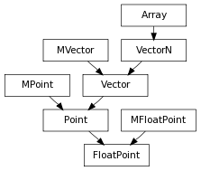

A 4 dimensional vector class that wraps Maya’s api FloatPoint class, It behaves identically to Point, but it also derives from api’s FloatPoint to keep api methods happy
alias of MFloatPoint
Copy the values of x, y, z, and w from srcpt to the instance. Note that this operation will lose precision as it casts from double to single-precision floating point.
| Parameters : |
|
|---|
Derived from api method maya.OpenMaya.MFloatPoint.setCast
Undo is not currently supported for this method